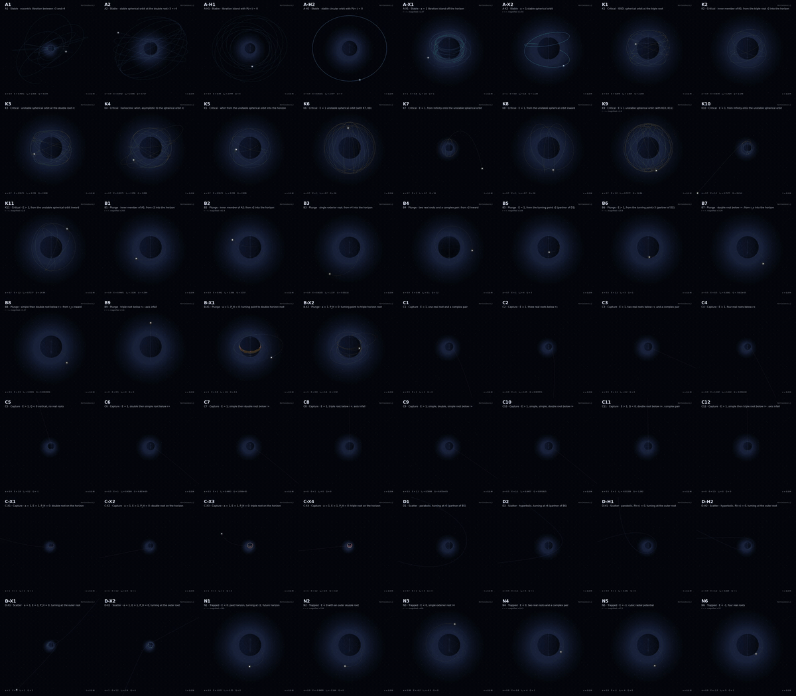

KerrGeodesics.jl
KerrGeodesics.jl computes timelike geodesics of the Kerr spacetime. Give it the spin $a$ and the constants of motion, energy $E$, axial angular momentum $L_z$ and Carter constant $Q$, and it returns every orbit these constants allow outside the black hole. Each orbit is a set of functions of Mino time $λ$: the Boyer–Lindquist coordinates $t, r, θ, φ$, the proper time $τ$, the four-velocity and, for orbits that reach a horizon, coordinates that stay finite there. Units are $G = c = M = 1$.

The animation shows the 56 orbits of the example catalogue, one for each kind of radial motion the package distinguishes, in class order: Stable, Critical, Plunge, Capture, Scatter and Trapped. The label on each tile is its case; Orbit classes explains the names, and the spin and constants $(a, E, L_z, Q)$ are printed on the tiles and recorded in the catalogue notebook. example/data/catalogue_registry.tsv lists their root structures, allowed intervals and formula families. Each tile draws $(x, y, z) = (r\sin θ\cos ϕ,\ r\sin θ\sin ϕ,\ r\cos θ)$ in units of $M$, with the spin along $z$, the outer horizon $r_+$ as the black sphere and the ergosphere as the wireframe. The azimuth $ϕ$ is $φ$, or $ψ = φ + φ_H$ for orbits that cross a horizon. The frames show the progression along each trajectory, not a shared physical-time interval between panels (see Coordinates regular at the horizon).
Installation
using Pkg
Pkg.add("KerrGeodesics")A first orbit
The spin and the three constants go into kerr_geodesic:
using KerrGeodesics
kg = kerr_geodesic(0.9, (0.9641204328952226, 2.8359152778998453, 4.544408272395823))
map(kerr_geo_member_class, kerr_geo_members(kg))(:stable, :plunge)These constants allow two orbits. One is stable: it oscillates between periapsis and apoapsis forever. The other starts at a turning point just outside the horizon and plunges into the black hole. Each is a member of the family kg, kept in the slot of its class. Their coordinates are functions of $λ$:
λ = 1.0
(t = kg.Stable.Trajectory.t(λ), r = kg.Stable.Trajectory.r(λ),
θ = kg.Stable.Trajectory.theta(λ), φ = kg.Stable.Trajectory.phi(λ))(t = 141.0911743346598, r = 18.757748594790698, θ = 2.153559011887651, φ = 3.8355940311322345)A stable orbit also carries its APEX parameters, the semi-latus rectum $p$, eccentricity $e$ and inclination $x$, and its Mino-time frequencies:
kg.Stable.Status.apex(a = 0.9, p = 10.000000000000094, e = 0.4999999999999946, x = 0.8)kg.Stable.Status.frequencies(ϒt = 171.09261873830474, ϒr = 2.7927217941170843, ϒθ = 3.5514896010488126, ϒϕ = 3.735760521403027)The same orbit can be requested by its APEX parameters instead of its constants:
kerr_geodesic(0.9, 10.0, 0.5, 0.8).Stable.ConstantsOfMotion(a = 0.9, E = 0.9641204328952225, Lz = 2.8359152778998347, Q = 4.544408272395791)Contents
- Orbit classes: how the constants decide the motion, the six classes and the 56 cases.
- Working with an orbit: what a member carries and how to evaluate it.
- Conventions: coordinates, parameters, and where each coordinate is zero.
- Numerics and accuracy: how the coordinates are computed and how accurate they are.
- Examples: worked examples for every class.
- APEX and finite-window interfaces: functions of
(a, p, e, x)for bound orbits, and the finite-window constructors for plunges, captures and scattering. - API reference: every exported function, type and constant.
The two notebooks in example/ show the same material with plots: KerrGeodesics_Tutorial.ipynb walks through the package, and KerrGeodesics_56_Orbit_Catalog.ipynb builds and animates the 56 orbits above.
Citation
If you use this code to compute Kerr geodesics, please cite:
@article{Yin:2025kls,
author = "Yin, Yucheng and Lo, Rico K. L. and Chen, Xian",
title = "{Gravitational radiation from Kerr black holes using the Sasaki-Nakamura formalism: waveforms and fluxes at infinity}",
eprint = "2511.08673",
archivePrefix = "arXiv",
primaryClass = "gr-qc",
doi = "10.1103/9ngz-k1lr",
journal = "Phys. Rev. D",
volume = "113",
pages = "124007",
year = "2026"
}KerrGeodesics.jl is released under the MIT License.